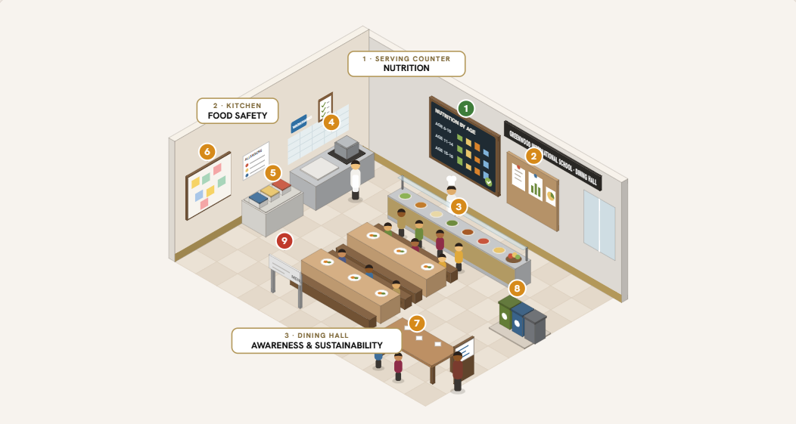
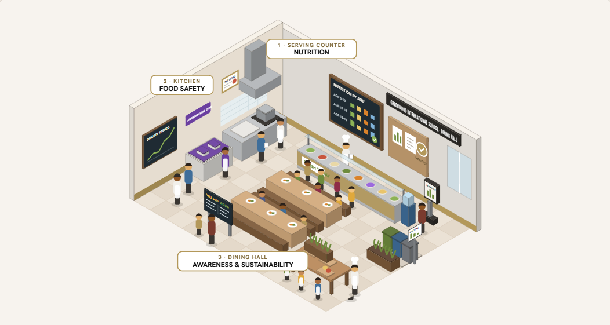

Dining Readiness Report
Prepared for Anita Rao, Principal · Greenwood International School
The institution has established several good practices. The next opportunity is to strengthen standardisation, nutritional accountability and operational consistency.
Menus start from nutrition targets. Nutrition data and ingredient limits cover only part of the menu.
Records, labels and reviews are in place. Audits, allergen controls and data-led reviews are the next step.
Campaigns and green initiatives exist. Communication with families is mostly one way.

Detailed assessment
Each of your 9 answers is scored 1, 3 or 5. Here is what your answer shows about each area.
| Area | Your answer | Level | What this means |
|---|---|---|---|
| 1 · Nutrition 11 / 15 · In progress | |||
| Nutrition strategy & menu designWhat shapes your menu decisions | Nutrition targets first | Strong | Demonstrates nutrition by design, with science-led standards embedded before menu development, aligned with the Compass K12 Nutrition Guideline. |
| Nutritional transparency & validationHow you prove the food is nutritious | Data for some meals | In progress | Some nutritional assessment is undertaken, but consistency across meal occasions, nutrients and menu cycles may need strengthening. |
| Healthy ingredient standardsSugar, salt, fried and processed foods | Some limits in place | In progress | Some limits exist for specific items, but standards may not yet cover the full menu consistently. DRAFT |
| 2 · Food Safety 9 / 15 · In progress | |||
| Food safety & operational governanceHow standards are followed every day | Documented and inspected | In progress | Demonstrates structured food safety practices, but the frequency, effectiveness and accountability of compliance monitoring may require further assessment. |
| Allergen managementKeeping a student with an allergy safe | Labels and a list | In progress | Allergen labelling and records exist, but controls across preparation, training and service may not be consistent. DRAFT |
| Continuous improvementWhat happens when you spot an improvement | Periodic reviews | In progress | Demonstrates an improvement-oriented approach, but opportunities remain to strengthen measurable outcomes, nutritional validation, and systematic review. |
| 3 · Awareness & Sustainability 7 / 15 · Needs attention | |||
| Nutrition education & student wellbeingHelping students choose well on their own | Campaigns and sessions | In progress | Demonstrates an awareness-based approach, with opportunities to create more consistent, experiential, and age-appropriate food literacy programmes. |
| Sustainability & responsible food practicesHow sustainability shows up | Some green initiatives | In progress | Demonstrates active sustainability initiatives, although their integration, monitoring and consistency across operations may vary. |
| Communication & feedbackKeeping families and students informed | Menus on display | Needs attention | Information is shared one way and feedback is informal, with limited evidence that it shapes decisions. DRAFT |
Future-ready view

Recommended next steps DRAFT
See how Compass Group supports institutions at every stage.